Albums as Sound: Visualizing Music with Tufte’s Principles
An interactive visualization that draws fifteen albums from five of my favorite artists as circular spectrograms, applying eight of Edward Tufte’s display principles so every album can be compared at a glance and explored down to 20 seconds of a single song.
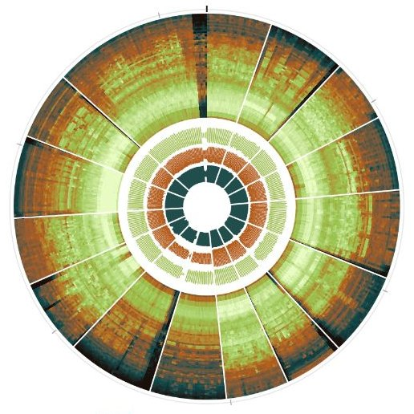
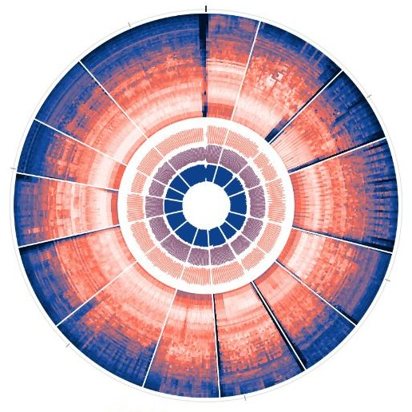
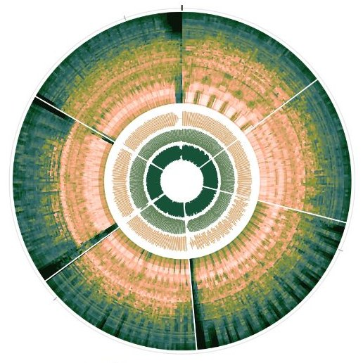
- Course
- Human Factors of Visual Display Systems
- My role
- Design & development
- Data
- 15 albums, 5 artists
- Built with
- HTML, Canvas, Web Audio
- Status
- Initial design, class feedback next
I chose the albums, designed the irisgram, and built the site as a single HTML page that analyzes every song in the browser. This is the initial design. It goes to class critique next, and that feedback will shape a refined final version.
Explore the albums
This is the working visualization, not a recording. Load an album and each song is downloaded and analyzed in your browser, so the first load takes a moment; after that it opens instantly. Click a circle to play from that spot, double-click to zoom in, and press Esc to zoom back out.
Albums as sound
Loading the album list…
Albums as sound
The album list couldn’t be loaded right now. Try the live site, or choose a music folder from your device: one folder per artist, each with one folder per album holding the songs and a cover image. Files are read on your device and never uploaded.
Albums as sound
Each circle is one album with its songs placed end to end, running clockwise from 12 o’clock. Low frequencies sit on the inner edge of the ring and high frequencies on the outer edge. Inside, the waveform is split into three rings in the album’s own colors: lows such as kicks and bass innermost, then mids such as vocals and instruments, then highs such as hi-hats and cymbals. Each album fills its whole circle, starting at the mark at 12 o’clock, so the circles compare the shape of each album rather than its length (lengths are listed beside each one). Every album shares one loudness scale: lighter color means louder sound. Each album takes its hues from its own cover.
Albums load when you ask for them. Click a circle to play from that spot, double-click it or click the album’s name to open it. Click an artist’s name (or press 1–5) to see just their three albums, larger; 0 or Esc shows everyone again. ·
Songs share this album’s time scale, running clockwise from 12 o’clock; ticks mark each minute. Click a song to play from that spot; double-click it to enlarge it.
Click to play from that spot. Double-click anywhere on the circle for a 20-second close-up that follows the song as it plays. Space plays or pauses, ← → skip five seconds, Esc goes back.
The close-up always shows the 20 seconds around the playhead, which sits at 6 o’clock while the song plays. Click the song’s circle above to jump anywhere; the close-up follows. Click inside the close-up to play from that exact moment.
Needs a desktop browser for the full layout. Keyboard shortcuts work once you’ve clicked inside the visualization.
How to read an irisgram
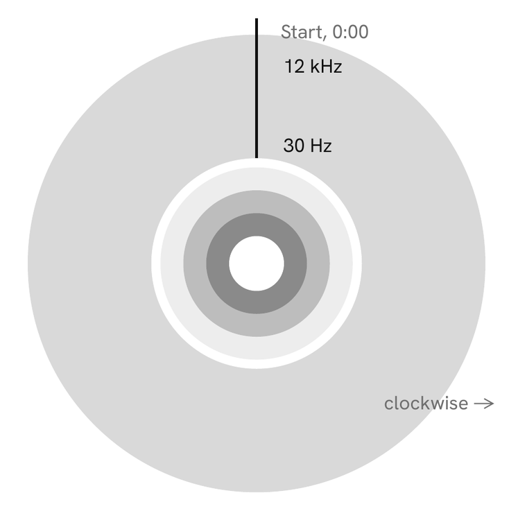
- TimeRuns clockwise from 12 o’clock. One full turn is a whole song, or a whole album on the overview.
- FrequencyDistance from the center. Bass (30 Hz) sits on the ring’s inner edge, treble (12 kHz) on its outer edge.
- LoudnessColor, in hues taken from the album cover. Lighter means louder, on one scale shared by every album.
- WaveformsThree rings at the center, inside out: lows (kicks, bass), mids (vocals, instruments), and highs (hi-hats, cymbals). A ring is thicker where that band is louder.
Eight of Tufte’s concepts shaped the design
Each concept from Envisioning Information and The Visual Display of Quantitative Information maps to a specific choice in the interface (Tufte, 1990, 2001).
| Concept | Principle | In the design |
|---|---|---|
| Small multiples | The same irisgram repeats for every album on one loudness scale, inviting local comparisons and comparisons of change. | A 5 × 3 grid of album irisgrams, one row per artist. |
| Macro and micro readings | Four zoom levels move from all fifteen albums down to 20 seconds of one song. | Overview, album, song, and a 20-second close-up, each a double-click apart. |
| Layering and separation | Frequency fills the outer ring, the waveform sits inside, and color is kept for loudness, raising data density. | Spectrogram ring outside, waveform rings inside; color only for loudness. |
| Data-ink ratio | A white, monochrome interface leaves color and ink for the data and the album covers. | White page, gray text, no frames or gridlines. |
| Dimensionality | The design is tailored to the listener and breaks away from a linear, flat way of presenting sound. | Circular time and click-to-zoom replace a flat, linear timeline. |
| The lie factor | Spatial representations match the data: angle shows time and distance from the center shows frequency. | Angle maps time and radius maps frequency, on scales shared by every album. |
| Subjective dimensions | The design is meant to be interesting and memorable, giving each album a recognizable shape. | Cover-colored irises give each album a memorable face. |
| Color layers | Bright, strong colors stand out on a quiet background; each color holds meaning and comes from the album art. | Cover hues on a white page; lighter always means louder. |
First iteration: linear strips
The first version drew each album as a flat strip: a gray waveform over a spectrogram, with the songs placed end to end on one time scale, so longer albums ran wider.
Several things worked and carried forward: all fifteen albums were visible at once, each song read clearly, the cover colors set albums apart, and the gaps between songs kept them separate. But the waveform and spectrogram sat apart rather than layered, the strips used little of the space, and comparing album shapes meant comparing lengths first.
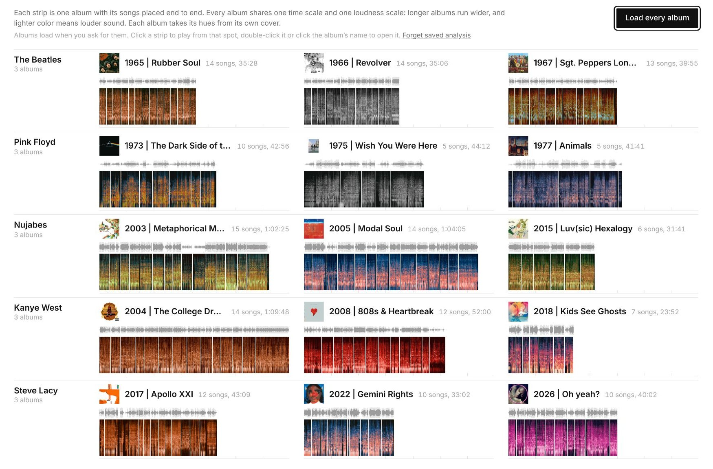
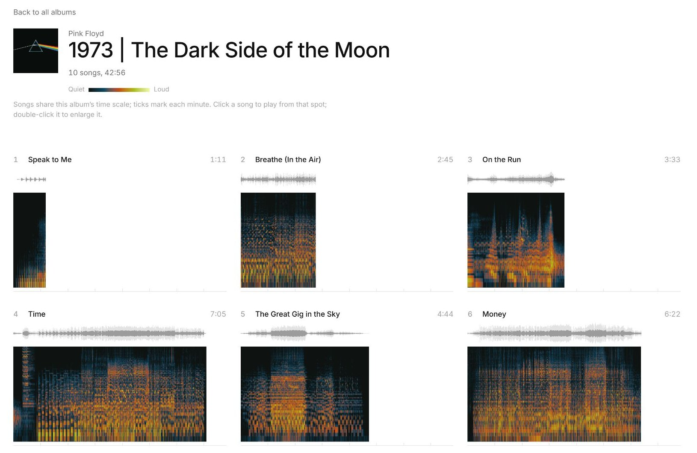
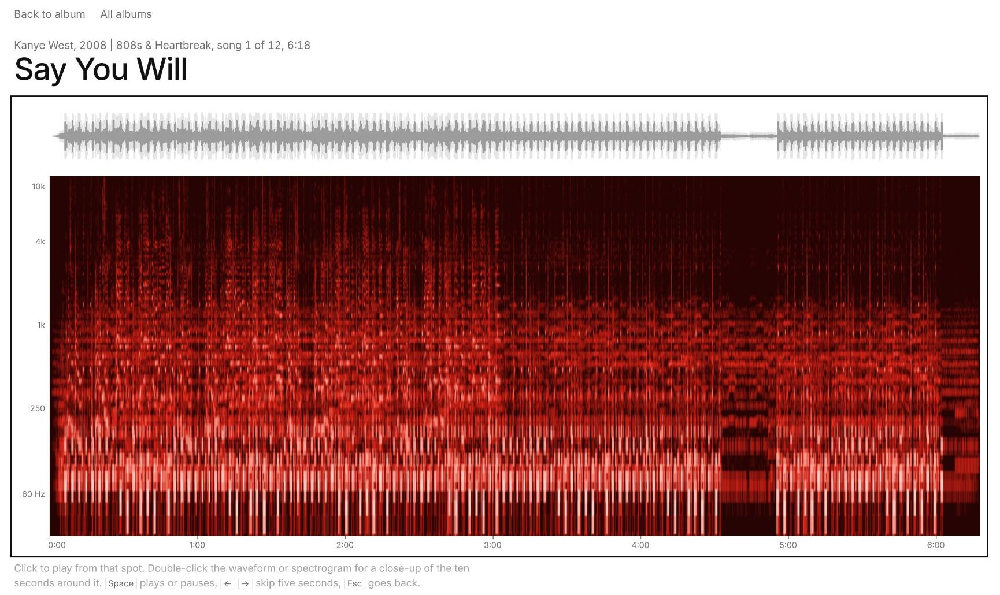
Current design: four zoom levels
Wrapping time around a circle turned each album into one compact shape and made room to layer the waveform inside the spectrogram. Each level is a double-click from the next.
-
All albums
Every album fills its whole circle, so the irises compare the shape of each album rather than its length, which is listed beside it. Thin white gaps mark where songs change.
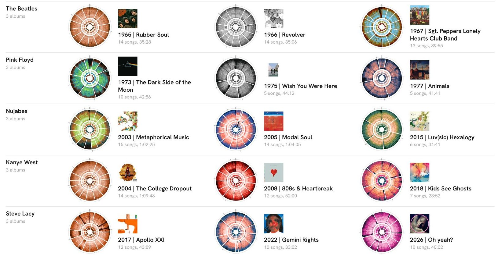
-
One artist
Clicking an artist’s name, or pressing 1 to 5, draws their three albums larger, side by side.
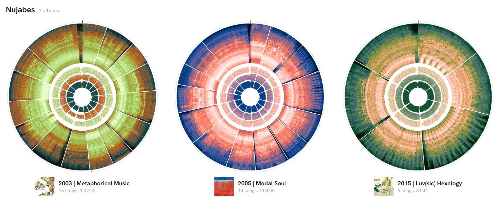
-
One album
Songs share the album’s time scale, so a short song draws a short arc and ticks mark each minute. The playing song is outlined, and its played portion fades.
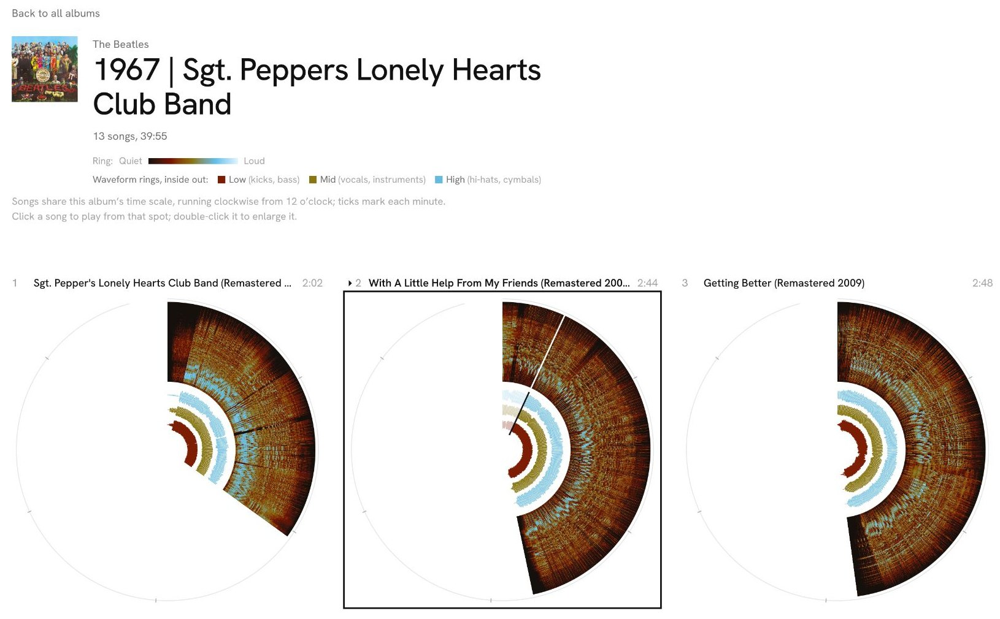
-
One song and its close-up
A song fills the circle with labeled time and frequency. Double-clicking opens a 20-second close-up that follows the playhead, fine enough to see individual beats.
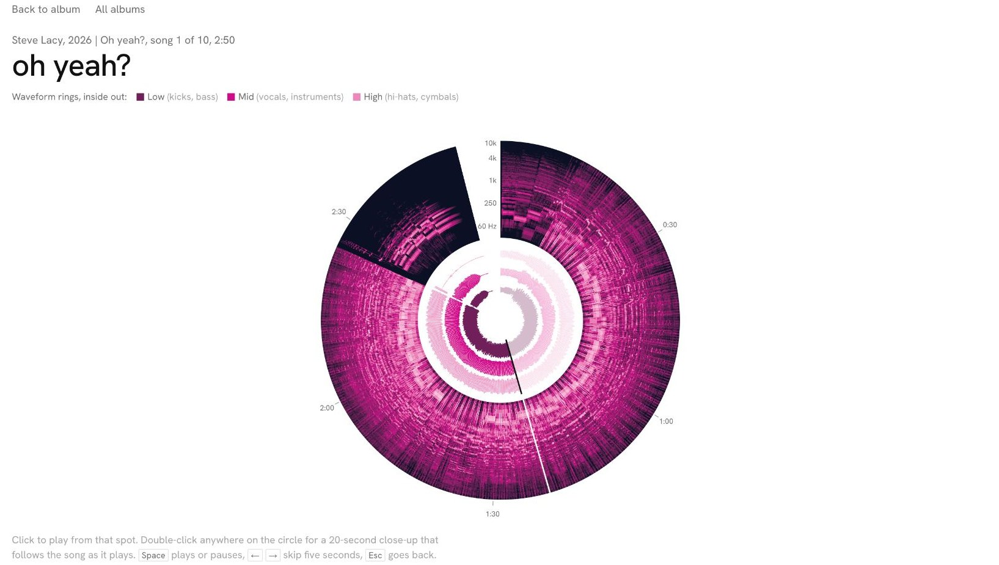
Whole song 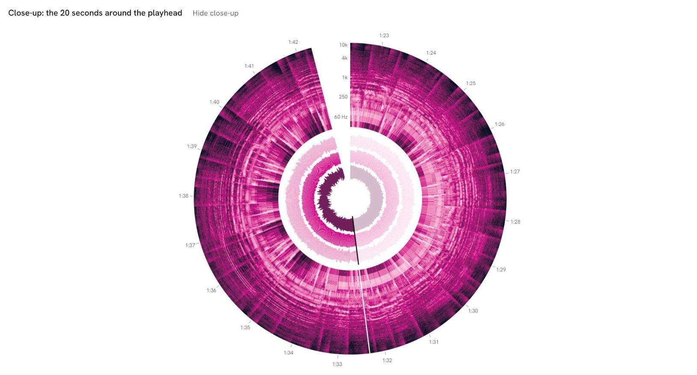
20-second close-up, following the playhead
How it works
- Analysis in the browserThe Web Audio API decodes each song, and a 4,096-point FFT slices it into 1,200 moments by 160 frequency bands, spaced logarithmically from 30 Hz to 12 kHz.
- One loudness scaleEvery album shares the same decibel range, so color means the same loudness everywhere. Songs more than 10 dB quieter than their album’s typical level are raised so they stay readable.
- Color from the coversEach palette comes from its cover’s dominant hues, blended in the OKLab color space with even lightness steps, so lighter always means louder whatever the hues (Ottosson, 2020).
- Three-band waveformLows (30 to 250 Hz), mids (250 Hz to 4 kHz), and highs (4 to 12 kHz) each get a fixed scale, since highs carry far less energy and would vanish on a shared one.
- Close-up on demandThe 20-second view is analyzed at 120 slices per second only around the playhead, so it keeps up while the song plays.
- Saved analysisFinished songs are stored in the browser, so albums open instantly on a return visit. Nothing is uploaded.
Next: class feedback
The initial design goes to class critique with three questions:
- Does the circular irisgram make albums easier or harder to compare than the linear strips?
- Can you read loudness from the colors without looking at the legend?
- Any other thoughts, comments, questions, or suggestions?
What comes after: I’ll refine the design from the critique and deliver the final version, then update this page with what changed and why.
Sources Show all 18Hide
- Kanye West. (2004). The college dropout [Album]. Roc-A-Fella Records.
- Kanye West. (2008). 808s & heartbreak [Album]. Roc-A-Fella Records.
- Kids See Ghosts. (2018). Kids see ghosts [Album]. GOOD Music; Def Jam Recordings.
- Nujabes. (2003). Metaphorical music [Album]. Hydeout Productions.
- Nujabes. (2005). Modal soul [Album]. Hydeout Productions.
- Nujabes & Shing02. (2015). Luv(sic) hexalogy [Album]. Hydeout Productions.
- Ottosson, B. (2020). A perceptual color space for image processing [Blog post]. https://bottosson.github.io/posts/oklab/
- Pink Floyd. (1973). The dark side of the moon [Album]. Harvest Records.
- Pink Floyd. (1975). Wish you were here [Album]. Harvest Records.
- Pink Floyd. (1977). Animals [Album]. Harvest Records.
- Steve Lacy. (2019). Apollo XXI [Album]. 3qtr.
- Steve Lacy. (2022). Gemini rights [Album]. L-M Records; RCA Records.
- Steve Lacy. (2026). Oh yeah? [Album]. RCA Records.
- The Beatles. (1965). Rubber soul [Album]. Parlophone.
- The Beatles. (1966). Revolver [Album]. Parlophone.
- The Beatles. (1967). Sgt. Pepper’s lonely hearts club band [Album]. Parlophone.
- Tufte, E. R. (1990). Envisioning information. Graphics Press.
- Tufte, E. R. (2001). The visual display of quantitative information (2nd ed.). Graphics Press.
Album audio and cover art belong to their respective artists and labels and are used here for a non-commercial class project.